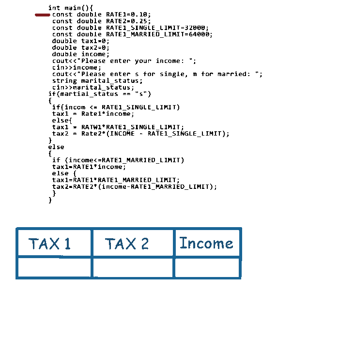

DECISIONS
Estructura Alternativa Múltiple
Per començar amb l'estructura Alternativa múltiple, cal haver entès els contignuts de l'estuctura alternativa simple.Fins ara hem vist com evaluar una expressió i determinar una execució o una altre en funció de si es compleix la condició establerta. Però a vegades es poden donar diferents casos que necessitem evaluar diferents solucions. En aquests casos apareix l'estructura alternativa múltiple.
Declaració i funcionament
Tot i això, també apareix el altrament si, o else if que substuteix els condicionals niats per una altre nomenclatura i que simplement serveix com a "sintantic sugar". És a dir, a nivell d'execució no hi ha diferència entre ells, però si que pot ajudar a fer més net el codi.
A continuació veurem un exemple de cada:
Condicionals niats
si(condició 1)
si (condició 1.1)
fer quelcom
altrement
fer quelcom
altrement
si(condició 2)
fer quelcom
altrement
si(condició 3)
si (condició 3.1)
fer quelcom
altrement
Continuació del codi després de l'estructura
Per veure millor el funcionament, mirem un exemple en C++:

Altrement si:
si(condició1)
fer quelcom
altrement si(condició 2)
fer quelcom 2
altrement si (condició 3)
fer quelcom 3
....
....
altrement
fer quelcom n